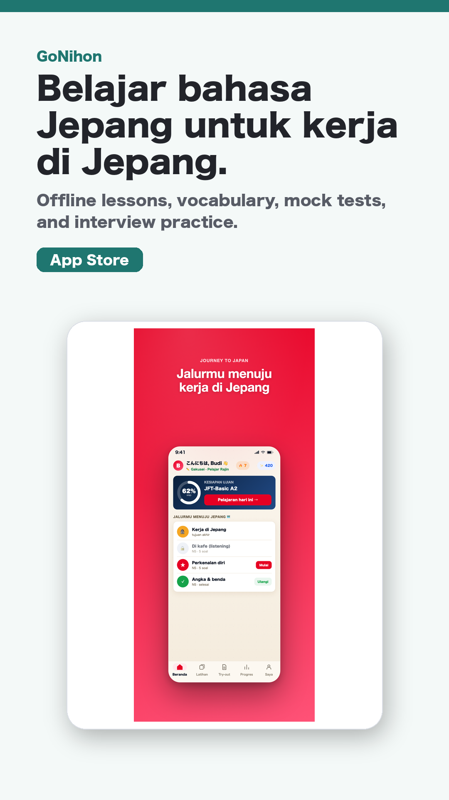

日本語学習 / iOS / Android / Web
GoNihon
Belajar bahasa Jepang untuk kerja di Jepang.
Indonesian speakers向けのオフライン日本語学習アプリ。語彙、模擬試験、面接練習に対応。
紹介文
1行紹介
Indonesian speakers向けのオフライン日本語学習アプリ。語彙、模擬試験、面接練習に対応。
媒体向け概要
GoNihon helps Indonesian speakers study Japanese for work in Japan with offline vocabulary, listening, mock tests, and interview practice. Progress, XP, and streaks work without an account.
掲載向けポイント
切り口Indonesia, Japanese learning, work in Japan, offline education audiences.
公開状態ASC app record found and public App Store URL returns 200; Google Play URL pending
Contactasd95179517@gmail.com
素材

- square PNG: https://tmpacc100.github.io/assets/social/gonihon-square.png
- story PNG: https://tmpacc100.github.io/assets/social/gonihon-story.png
- vertical_1080x1920_mp4: https://tmpacc100.github.io/assets/video/gonihon-short.mp4
{kind=link}
{kind=link}
配布リンク
- Store URL: https://apps.apple.com/id/app/apple-store/id6778385065
- X organic: https://tmpacc100.github.io/go/gonihon/x/
- Threads organic: https://tmpacc100.github.io/go/gonihon/threads/
- TikTok organic: https://tmpacc100.github.io/go/gonihon/tiktok/
- YouTube Shorts: https://tmpacc100.github.io/go/gonihon/youtube-shorts/
- Email outreach: https://tmpacc100.github.io/go/gonihon/email/
- Product Hunt: https://tmpacc100.github.io/go/gonihon/producthunt/